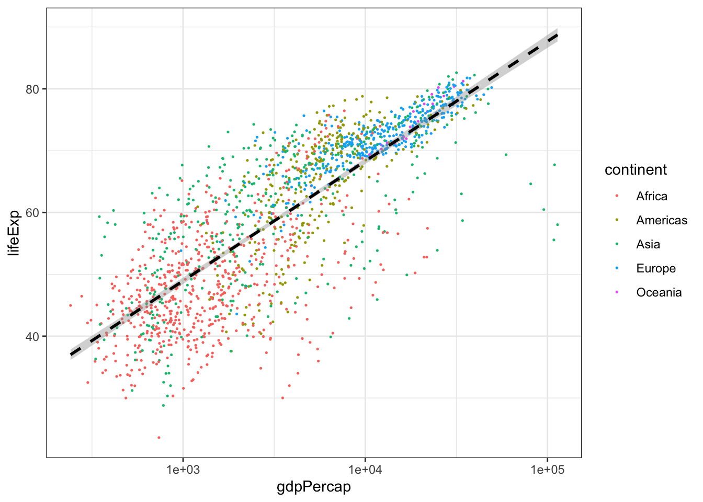
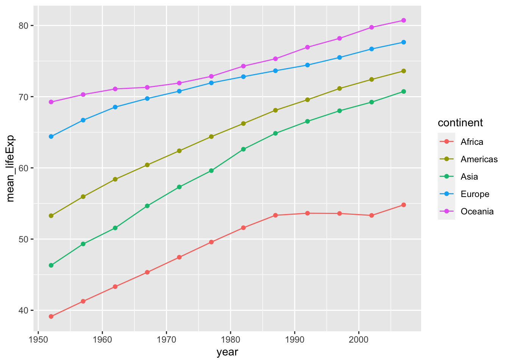
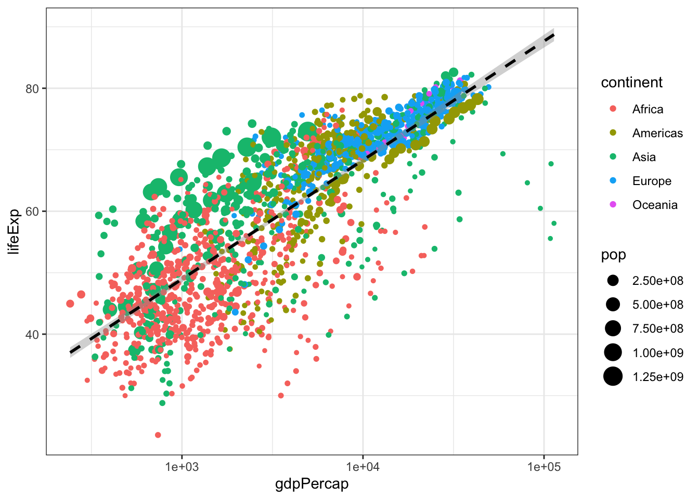
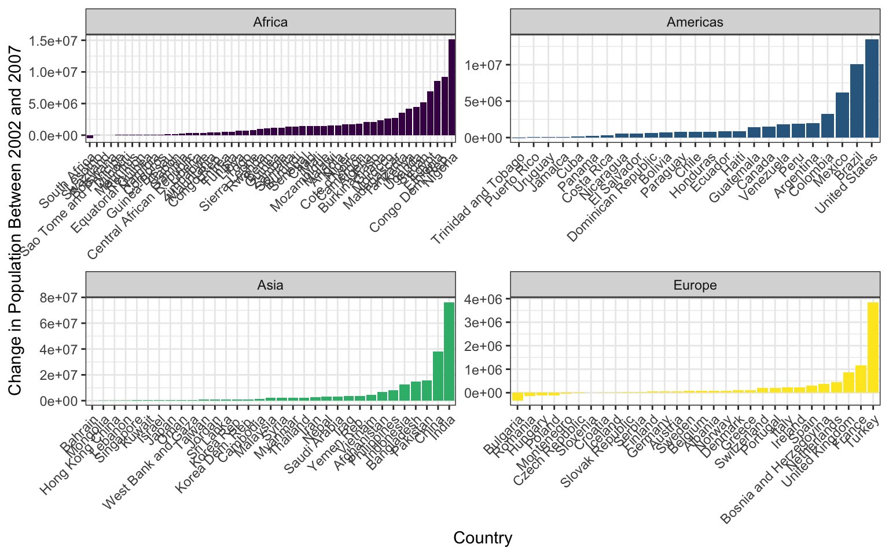

The following material will be posted on Github via the Discussion board for the class Team (2020 is the Dragons). Assignments are designed to reinforce the code/lessons covered that week, and provide students a chance to both practice coding and reviewing code. Assignments were completed via private repositories each student set up (via Github Classrooms), and each week students will be randomly assigned another student for a code review. Apologies if there are links that don’t work, they may be specifically setup for students enrolled in course.
Today we talked quite a bit about project management, directory structure, and file paths. Understanding how your computer thinks about file organization can be tricky, but it’s crucial to any computational task and good project management. We’ll have you do a little exercise to help sketch out the relationships between files and folders in your computer.
Grab a pen/pencil and paper and draw out some sort of diagram showing the structure of your “in-class-project” directory. Include the sub-folders and some example files. Somewhere in this diagram, denote what git views as your “repository” and what RStudio views as your “R Project” (Hint: this might involve circling portions of your diagram). Feel free to add notes about the purposes of files/folders you included, or even add new files and folders you think could aid in your project organization. You’re going to be taking a picture of this diagram/uploading it, so if you’d prefer to make it digitally, like in PowerPoint or Lucidchart, go right ahead
If you drew your diagram on paper, take a picture of it and email it to yourself. If you made it digitally, save it as a .png or .jpg or take a screenshot of it. Get the photo of your diagram into your “in-class-project” folder, and put it into an “images” folder there. You should end up with a file that’s something like “in-class-project-yourname/images/your_diagram.jpg”. This will be practice for taking external files, moving them into a project, and using them within the project.
Get on the good ole Google and look up how to add a local image to a Markdown file. Your README.md is written in Markdown, and we’re going to add your diagram photo to it. This should involve just one line of new code- the trickiest part is referring to the correct location of your photo relative to the README file (Hint: your “link” to the file won’t be a website link). Once you’ve made this change, commit and push your changes to GitHub. This photo should now appear in the README when you open your repository on GitHub.
In Week 3’s homework we are going to practice subsetting and manipulating vectors. Fun!
First, open your r-davis-in-class-project-YourName and pull! Remember, we always want to start working on a github project by pulling, even if we are sure nothing has changed (believe me, this small step will save you lots of headaches).
Second, open a new script in your r-davis-in-class-project-YourName and save it to your scripts folder. Call this new script week_3_homework.
Copy and paste the chunck of code below into your new week_3_homework script and run it. This chunck of code will create the vector you will use in your homework today. Check in your environment to see what it looks like. What do you think each line of code is doing?
set.seed(15)
hw3 <- runif(50, 4, 50)
hw3 <- replace(hw3, c(4,12,22,27), NA)
hw3## [1] 31.697246 12.972021 48.457102 NA 20.885307 49.487524 41.498897
## [8] 15.682545 35.612619 42.245735 8.814791 NA 27.418158 36.504914
## [15] 43.666428 42.722117 24.582411 48.374680 10.494605 39.728776 40.971460
## [22] NA 20.447903 6.668049 30.024323 34.314318 NA 10.825658
## [29] 46.676823 25.913006 26.933701 15.810164 26.616794 9.403891 27.589087
## [36] 34.262403 9.591257 27.733004 17.877330 38.975078 46.102046 25.041810
## [43] 46.369401 15.919465 19.813791 23.741937 19.192818 38.630297 42.819312
## [50] 4.500130PROBLEM 1:
Take you hw3 vector and removed all the NAs then select all the numbers between 14 and 38 inclusive, call this vector prob1.
PROBLEM 2:
Multiply each number in the prob1 vector by 3 to create a new vector called times3. Then add 10 to each number in your times3 vector to create a new vector called plus10.
PROBLEM 3:
Select every other number in your plus10 vector by selecting the first number, not the second, the third, not the fourth, etc. If you’ve worked through these three problems in order, you should now have a vector that is 12 numbers long that looks exactly like this one:
final## [1] 105.09174 57.04763 92.25447 83.74723 100.07297 87.73902 57.43049
## [8] 92.76726 93.19901 85.12543 69.44137 67.57845Finally, save your script and push all your changes to your github account!
DO NOT OPEN until you are ready to see the answers
prob1 <- hw3[!is.na(hw3)] #removing the NAs
prob1 <- prob1[prob1 >14 & prob1 < 38] #only selecting numbers between 14 and 38
times3 <- prob1 * 3 #multiplying by 3
plus10 <- times3 + 10 #adding 10 to the whole vector
final <- plus10[c(TRUE, FALSE)] #selecting every other number using logical subsettingHomework this week will be playing with the surveys data we worked on in class. First things first, open your r-davis-in-class-project and PULL! Then create a new script in your scripts folder called homework_week4.R.
We are going to ask you to use the two different types of subsetting techniques we learned about: Base R and Tidyverse. It’s important to understand both, although in your own work you will probably be using just one.
PROBLEM 1:
First, Base R (DON’T use any tidyverse functions for this part!)
Load your survey data frame with read.csv. Create a new data frame called surveys_base with only the species_id, the weight, and the plot_type columns. Have this data frame only be the first 60 rows. Convert both species_id and plot_type to characters. Remove all rows with weight == NA.
CHALLENGE! Create a second data frame called challenge_base that only consists of individuals from your surveys_base data frame with weights greater than 150g.
DO NOT OPEN until you are ready to see the answers for the Base R portion of the homework
#PROBLEM 1
surveys <- read.csv("data/portal_data_joined.csv") #reading the data in
colnames(surveys) #a list of the column names ## [1] "record_id" "month" "day"
## [4] "year" "plot_id" "species_id"
## [7] "sex" "hindfoot_length" "weight"
## [10] "genus" "species" "taxa"
## [13] "plot_type"surveys_new <- surveys[1:60, c(6, 9, 13)] #selecting rows 1:60 and just columns 6, 9 and 13
surveys_new$species_id <- as.character(surveys_new$species_id) #converting factor data to character
surveys_new$plot_type <- as.character(surveys_new$plot_type) #converting factor data to character
surveys_new <- surveys_new[complete.cases(surveys_new), ] #selecting only the ROWS that have complete cases (no NAs) **Notice the comma was needed for this to work**
#CHALLENGE
challenge_base <- surveys_new[(surveys_new[, 2]>150),] #selecting just the weights (column 2) that are greater than 150PROBLEM 2:
Now, tidyverse! For this second problem, you can use the tidyverse commands we learned in class (although you may need a base function or two).
Load your survey data frame with read_csv and call it surveys2. Create a new data frame called surveys_tidy with only the species_id, hindfoot_length, and the year columns. Remove all rows with hindfoot_length == NA. Next, select only the last 100 rows. Remember, species_id should already be a character column, so there is no need to convert
CHALLENGE! Create a second data frame called challenge_tidy that only consists of the species “RM” in the year 1997.
DO NOT OPEN until you are ready to see the answers for the Tidyverse portion of the homework
#PROBLEM 2
library(tidyverse) #load tidyverse ## ── Attaching packages ───────────────────────────────────────────────────────────────────── tidyverse 1.3.0 ──## ✔ ggplot2 3.2.1 ✔ purrr 0.3.3
## ✔ tibble 2.1.3 ✔ dplyr 0.8.3
## ✔ tidyr 1.0.0.9000 ✔ stringr 1.4.0
## ✔ readr 1.3.1 ✔ forcats 0.4.0## ── Conflicts ──────────────────────────────────────────────────────────────────────── tidyverse_conflicts() ──
## ✖ dplyr::filter() masks stats::filter()
## ✖ dplyr::lag() masks stats::lag()surveys2 <- read_csv("data/portal_data_joined.csv") #read in data with tidyverse command## Parsed with column specification:
## cols(
## record_id = col_double(),
## month = col_double(),
## day = col_double(),
## year = col_double(),
## plot_id = col_double(),
## species_id = col_character(),
## sex = col_character(),
## hindfoot_length = col_double(),
## weight = col_double(),
## genus = col_character(),
## species = col_character(),
## taxa = col_character(),
## plot_type = col_character()
## )surveys_tidy <- surveys2 %>%
select(species_id, hindfoot_length, year) %>%
filter(!is.na(hindfoot_length)) #removing all the NAs from hindfoot_length
surveys_tidy <- surveys_tidy[-c(1:31338), ] #selecting the LAST 100 rows, data frame was 31438 rows long initially
#CALLENGE
challenge_tidy <- surveys_tidy %>%
filter(year == 1997) %>%
filter(species_id == "RM")Finally, save your script and PUSH the changes to github.
Create a tibble named surveys from the portal_data_joined.csv file.
Subset surveys to keep rows with weight between 30 and 60, and print out the first 6 rows.
Create a new tibble showing the maximum weight for each species + sex combination and name it biggest_critters. Sort the tibble to take a look at the biggest and smallest species + sex combinations. HINT: it’s easier to calculate max if there are no NAs in the dataframe…
Try to figure out where the NA weights are concentrated in the data- is there a particular species, taxa, plot, or whatever, where there are lots of NA values? There isn’t necessarily a right or wrong answer here, but manipulate surveys a few different ways to explore this. Maybe use tally and arrange here.
Take surveys, remove the rows where weight is NA and add a column that contains the average weight of each species+sex combination to the full surveys dataframe. Then get rid of all the columns except for species, sex, weight, and your new average weight column. Save this tibble as surveys_avg_weight.
Take surveys_avg_weight and add a new column called above_average that contains logical values stating whether or not a row’s weight is above average for its species+sex combination (recall the new column we made for this tibble).
Manipulate surveys to create a dataframe with a column for genus and a column named after every plot type, with each of these columns containing the mean hindfoot length of animals in that plot type and genus. So every row has a genus and then a mean hindfoot length value for every plot type. The dataframe should be sorted by values in the Control plot type column. This question will involve quite a few of the functions you’ve used so far, and it may be useful to sketch out the steps to get to the final result.
DO NOT OPEN until you are ready to see the answers for the Tidyverse portion of the homework
library(tidyverse)
#1
surveys <- read_csv("data/portal_data_joined.csv")## Parsed with column specification:
## cols(
## record_id = col_double(),
## month = col_double(),
## day = col_double(),
## year = col_double(),
## plot_id = col_double(),
## species_id = col_character(),
## sex = col_character(),
## hindfoot_length = col_double(),
## weight = col_double(),
## genus = col_character(),
## species = col_character(),
## taxa = col_character(),
## plot_type = col_character()
## )#2
surveys %>%
filter(weight > 30 & weight < 60)## # A tibble: 14,730 x 13
## record_id month day year plot_id species_id sex hindfoot_length
## <dbl> <dbl> <dbl> <dbl> <dbl> <chr> <chr> <dbl>
## 1 5966 5 22 1982 2 NL F 32
## 2 226 9 13 1977 2 DM M 37
## 3 233 9 13 1977 2 DM M 25
## 4 245 10 16 1977 2 DM M 37
## 5 251 10 16 1977 2 DM M 36
## 6 257 10 16 1977 2 DM M 37
## 7 259 10 16 1977 2 DM M 36
## 8 268 10 16 1977 2 DM F 36
## 9 346 11 12 1977 2 DM F 37
## 10 350 11 12 1977 2 DM M 37
## # … with 14,720 more rows, and 5 more variables: weight <dbl>,
## # genus <chr>, species <chr>, taxa <chr>, plot_type <chr>#3
biggest_critters <- surveys %>%
filter(!is.na(weight)) %>%
group_by(species_id, sex) %>%
summarise(max_weight = max(weight))
biggest_critters %>% arrange(max_weight)## # A tibble: 64 x 3
## # Groups: species_id [25]
## species_id sex max_weight
## <chr> <chr> <dbl>
## 1 PF <NA> 8
## 2 BA M 9
## 3 RO M 11
## 4 RO F 13
## 5 RF M 15
## 6 RM <NA> 16
## 7 BA F 18
## 8 PE <NA> 18
## 9 PI <NA> 18
## 10 PP <NA> 18
## # … with 54 more rowsbiggest_critters %>% arrange(desc(max_weight))## # A tibble: 64 x 3
## # Groups: species_id [25]
## species_id sex max_weight
## <chr> <chr> <dbl>
## 1 NL M 280
## 2 NL F 274
## 3 NL <NA> 243
## 4 SF F 199
## 5 DS F 190
## 6 DS M 170
## 7 DS <NA> 152
## 8 SH F 140
## 9 SH <NA> 130
## 10 SS M 130
## # … with 54 more rows#4
surveys %>%
filter(is.na(weight)) %>%
group_by(species) %>%
tally() %>%
arrange(desc(n))## # A tibble: 37 x 2
## species n
## <chr> <int>
## 1 harrisi 437
## 2 merriami 334
## 3 bilineata 303
## 4 spilosoma 246
## 5 spectabilis 160
## 6 ordii 123
## 7 albigula 100
## 8 penicillatus 99
## 9 torridus 89
## 10 baileyi 81
## # … with 27 more rowssurveys %>%
filter(is.na(weight)) %>%
group_by(plot_id) %>%
tally() %>%
arrange(desc(n))## # A tibble: 24 x 2
## plot_id n
## <dbl> <int>
## 1 13 160
## 2 15 155
## 3 14 152
## 4 20 152
## 5 12 144
## 6 17 144
## 7 11 119
## 8 9 118
## 9 2 117
## 10 21 106
## # … with 14 more rowssurveys %>%
filter(is.na(weight)) %>%
group_by(year) %>%
tally() %>%
arrange(desc(n))## # A tibble: 26 x 2
## year n
## <dbl> <int>
## 1 1977 221
## 2 1998 195
## 3 1987 151
## 4 1988 130
## 5 1978 124
## 6 1982 123
## 7 1989 123
## 8 1991 108
## 9 2002 108
## 10 1992 106
## # … with 16 more rows#5
surveys_avg_weight <- surveys %>%
filter(!is.na(weight)) %>%
group_by(species_id, sex) %>%
mutate(avg_weight = mean(weight)) %>%
select(species_id, sex, weight, avg_weight)
surveys_avg_weight## # A tibble: 32,283 x 4
## # Groups: species_id, sex [64]
## species_id sex weight avg_weight
## <chr> <chr> <dbl> <dbl>
## 1 NL M 218 166.
## 2 NL M 204 166.
## 3 NL M 200 166.
## 4 NL M 199 166.
## 5 NL M 197 166.
## 6 NL M 218 166.
## 7 NL M 166 166.
## 8 NL M 184 166.
## 9 NL M 206 166.
## 10 NL F 274 154.
## # … with 32,273 more rows#6
surveys_avg_weight <- surveys_avg_weight %>%
mutate(above_average = weight > avg_weight)
surveys_avg_weight## # A tibble: 32,283 x 5
## # Groups: species_id, sex [64]
## species_id sex weight avg_weight above_average
## <chr> <chr> <dbl> <dbl> <lgl>
## 1 NL M 218 166. TRUE
## 2 NL M 204 166. TRUE
## 3 NL M 200 166. TRUE
## 4 NL M 199 166. TRUE
## 5 NL M 197 166. TRUE
## 6 NL M 218 166. TRUE
## 7 NL M 166 166. TRUE
## 8 NL M 184 166. TRUE
## 9 NL M 206 166. TRUE
## 10 NL F 274 154. TRUE
## # … with 32,273 more rows#7
surveys %>%
filter(!is.na(hindfoot_length)) %>%
group_by(genus, plot_type) %>%
summarise(mean_hindfoot = mean(hindfoot_length)) %>%
pivot_wider(names_from = plot_type, values_from = mean_hindfoot) %>%
arrange(Control)## # A tibble: 10 x 6
## # Groups: genus [10]
## genus Control `Rodent Exclosu… `Long-term Krat… `Short-term Kra…
## <chr> <dbl> <dbl> <dbl> <dbl>
## 1 Baio… 13 13.5 12.9 13
## 2 Pero… 15.9 16.1 15.8 15.7
## 3 Reit… 16.6 16.5 16.4 16.5
## 4 Pero… 20.3 20.3 20.3 20.3
## 5 Onyc… 20.4 20.3 20.3 20.3
## 6 Chae… 23.6 22.7 24.1 24.3
## 7 Sigm… 27.8 28.2 28.0 25.7
## 8 Ammo… 31 35 NA NA
## 9 Neot… 32.2 32.4 32.5 32.2
## 10 Dipo… 37.8 36.9 36.7 38.8
## # … with 1 more variable: `Spectab exclosure` <dbl>For our week six homework, we are going to be practicing the skills we learned with ggplot during class. You will be happy to know that we are going to be using a brand new data set called gapminder. This data set is looking at statistics for a few different counties including population, GDP per capita, and life expentancy. Download the data using the code below. Remember, this code is looking for a folder called data to put the .csv in, so make sure you have a folder named data, or modify the code to the correct folder name.
library(tidyverse)
gapminder <- read_csv("https://gge-ucd.github.io/R-DAVIS/data/gapminder.csv") #ONLY change the "data" part of this path if necessary## Parsed with column specification:
## cols(
## country = col_character(),
## year = col_double(),
## pop = col_double(),
## continent = col_character(),
## lifeExp = col_double(),
## gdpPercap = col_double()
## )First calculates mean life expectancy on each continent. Then create a plot that shows how life expectancy has changed over time in each continent. Try to do this all in one step using pipes! (aka, try not to create intermediate dataframes)
Look at the following code and answer the following questions. What do you think the scale_x_log10() line of code is achieving? What about the geom_smooth() line of code?
Challenge! Modify the above code to size the points in proportion to the population of the country. Hint: Are you translating data to a visual feature of the plot?
Hint: There’s no cost to tinkering! Try some code out and see what happens with or without particular elements.
ggplot(gapminder, aes(x = gdpPercap, y = lifeExp)) +
geom_point(aes(color = continent), size = .25) +
scale_x_log10() +
geom_smooth(method = 'lm', color = 'black', linetype = 'dashed') +
theme_bw()
Create a boxplot that shows the life expectency for Brazil, China, El Salvador, Niger, and the United States, with the data points in the backgroud using geom_jitter. Label the X and Y axis with “Country” and “Life Expectancy” and title the plot “Life Expectancy of Five Countries”.
DO NOT OPEN until you are ready to see the answers!
library(tidyverse)
#PROBLEM 1:
gapminder %>%
group_by(continent, year) %>%
summarize(mean_lifeExp = mean(lifeExp)) %>% #calculating the mean life expectancy for each continent and year
ggplot()+
geom_point(aes(x = year, y = mean_lifeExp, color = continent))+ #scatter plot
geom_line(aes(x = year, y = mean_lifeExp, color = continent)) #line plot
#there are other ways to represent this data and answer this question. Try a facet wrap! Play around with themes and ggplotly!
#PROBLEM 2:
#challenge answer
ggplot(gapminder, aes(x = gdpPercap, y = lifeExp)) +
geom_point(aes(color = continent, size = pop)) +
scale_x_log10() +
geom_smooth(method = 'lm', color = 'black', linetype = 'dashed') +
theme_bw()
#PROBLEM 3:
countries <- c("Brazil", "China", "El Salvador", "Niger", "United States") #create a vector with just the countries we are interested in
gapminder %>%
filter(country %in% countries) %>%
ggplot(aes(x = country, y = lifeExp))+
geom_boxplot() +
geom_jitter(alpha = 0.3, color = "blue")+
theme_minimal() +
ggtitle("Life Expectancy of Five Countries") + #title the figure
theme(plot.title = element_text(hjust = 0.5)) + #centered the plot title
xlab("Country") + ylab("Life Expectancy") #how to change axis namesFor week 7, we’re going to be working on 2 critical ggplot skills: recreating a graph from a dataset and googling stuff.
Our goal will be to make this final graph using the gapminder dataset:

The x axis labels are all scrunched up because we can’t make the image bigger on the webpage, but if you make it and then zoom it bigger in RStudio it looks much better.
We’ll touch on some intermediate steps here, since it might take quite a few steps to get from start to finish. Here are some things to note:
To get the population difference between 2002 and 2007 for each country, it would probably be easiest to have a country in each row and a column for 2002 population and a column for 2007 population.
Notice the order of countries within each facet. You’ll have to look up how to order them in this way.
Also look at how the axes are different for each facet. Try looking through ?facet_wrap to see if you can figure this one out.
The color scale is different from the default- feel free to try out other color scales, just don’t use the defaults!
The theme here is different from the default in a few ways, again, feel free to play around with other non-default themes.
The axis labels are rotated! Here’s a hint: angle = 45, hjust = 1. It’s up to you (and Google) to figure out where this code goes!
Is there a legend on this plot?
This lesson should illustrate a key reality of making plots in R, one that applies as much to experts as beginners: 10% of your effort gets the plot 90% right, and 90% of the effort is getting the plot perfect. ggplot is incredibly powerful for exploratory analysis, as you can get a good plot with only a few lines of code. It’s also extremely flexible, allowing you to tweak nearly everything about a plot to get a highly polished final product, but these little tweaks can take a lot of time to figure out!
So if you spend most of your time on this lesson googling stuff, you’re not alone!
DO NOT OPEN until you are ready to see the answers
library(tidyverse)
gapminder <- read_csv("data/gapminder.csv")
pg <- gapminder %>%
select(country, year, pop, continent) %>%
filter(year > 2000) %>%
pivot_wider(names_from = year, values_from = pop) %>%
mutate(pop_change_0207 = `2007` - `2002`)
pg %>%
filter(continent != "Oceania") %>%
ggplot(aes(x = reorder(country, pop_change_0207), y = pop_change_0207)) +
geom_col(aes(fill = continent)) +
facet_wrap(~continent, scales = "free") +
theme_bw() +
scale_fill_viridis_d() +
theme(axis.text.x = element_text(angle = 45, hjust = 1),
legend.position = "none") +
xlab("Country") +
ylab("Change in Population Between 2002 and 2007")details>
DO NOT OPEN until you are ready to see the answers